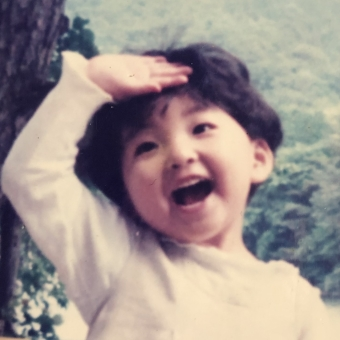
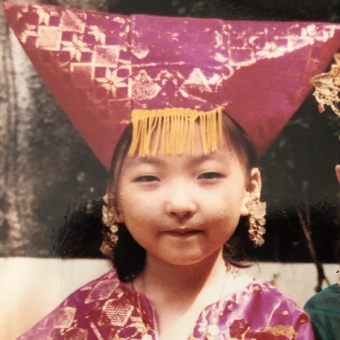

TIMELINE
where I lived

Changwon, Korea
1992 ~ 1997

Jakarta, Indonesia
1997 ~ 2000

Seoul, Korea
2000 ~ ing
recent interest
최근에 면허를 따서 차에 관심이 생겼다. 언젠가 자차를 마련하는 것이 내 소박한 버킷리스트
개발자가 되기로 결심하고 프로그래밍을 배우고 있다. java,oracle,html/css,javascript등 다양한 분야를 섭렵 중이라고 생각하고 있다.
이때까지 했던 운동 중에 가장 잘 맞는 것이라 생각한다. 실력이 더 늘면 철인3종 경기에도 나가보고 싶다.
about me
| NAME | 정은아 |
| BIRTH DATE | 1992년 11월 24일 |
| HOROSCOPE | 사수자리 |
| FAMILY | 1남 1녀 중 장녀 |
| BLOODTYPE | O형 |
| MBTI | ISTP |
| LIKE | 쉬기 먹기 |
| DISLIKE | 쉼 없는 생활 |
| PHONENUMBER | 010-2274-3913 |
| local456a@gmail.com |
where I lived
Changwon, Korea
1992 ~ 1997
Jakarta, Indonesia
1997 ~ 2000
Seoul, Korea
2000 ~ ing
tell you more about me
Q1. 내 삶의 목적은 무엇인가?
A1. 헹복하게 살기
Q2. 당장 기분을 좋게하는 비법이 있는가?
A2. 단 거 먹기
Q3. 오늘 나에게 동기를 부여해준 일은?
A3. 얼마 남지 않은 시간
Q4. 다음에 여행하고 싶은 곳은 어디인가?
A4. 북유럽 쪽. 오로라를 보고싶다
Q5. 최근에 가장 맛있었던 식사는?
A5. 마라탕 요즘 마라탕을 자주 먹는다
Q6. 가장 자신있게 만들 수 있는 요리는?
A6. 라면
Q7. 몹시 기다려지는 일이 있는가?
A7. 공휴일
Q8. 좋아하는 TV 프로그램은?
A8. 나혼자산다. 최근에는 못 챙겨봤다
Q9. 여름이 좋은가? 겨울이 좋은가?
A9. 겨울. 추운 것보다 습한 것이 싫다
Q10. 오늘 나의 하루는 짠맛인가, 달달한 맛인가?
A10. 솔티드 카라멜 같은 하루
Q11. 내가 본 최악의 영화는?
A11. 미스트. 결말이 충격적이었다
Q12. 긴 머리와 짧은 머리 중에 하나를 고르라면?
A12. 긴 머리
Q13. 현재 가장 큰 지출을 차지하는 부분은?
A13. 커피. 카페인 없이는 살 수가 없다
Q14. 오늘 일어나기를 바라는 일은?
A14. 로또 당첨
Q15. 계속 머릿속에 맴도는 노래가 있다면?
A15. Feel Special
Q16. 첫눈이 내리면 가장 먼저 하고 싶은 일은?
A16. 새벽에 아무도 안 밟은 눈 밟기
Q17. 올해 가장 기억에 남는 일은?
A17. 비트캠프 개강한 것. 첫날에 비왔던 기억이 아직도 난다
Q18. 오늘 커피를 몇 잔 마셨는가?
A18. 두 잔
Q19. 현재 읽고있는 글이나 책이 있다면?
A19. 자바? 컴퓨터책만 읽는 중이다
Q20. 직감을 믿는 편인가?
A20. 믿는 편이다. 직감은 빅데이터다
Q21. 나의 일요일 아침은 어떤 풍경인가?
A21. 늦잠 자기 일요일의 시작은 오후 두시부터다
Q22. 지금 당장 사고 싶은 것은?
A22. 에어팟 케이스
Q23. 가장 좋아하는 외식 메뉴는?
A23. 떡볶이
Q24. 나를 잘 나타내주는 노래는?
A24. 말하는대로
Q25. 나는 내년에 어떤 모습일까?
A25. 직장인이었으면 좋겠다
Q26. 오늘 가장 좋았던 시간은 언제인가?
A26. 목욕하고 잠들기 전
Q27. 내가 지나치게 자주 사용하는 단어는?
A27. 진짜
Q28. 나는 돈을 충분히 버는가?
A28. 나라에서 주는 돈으로 근근히 먹고산다
Q29. 나에게 없어서는 안될 인류의 발명품은?
A29. 컴퓨터
Q30. 오늘 감사하게 생각하는 일은?
A30. 공부할 기회가 주어졌다는 것이 감사하다